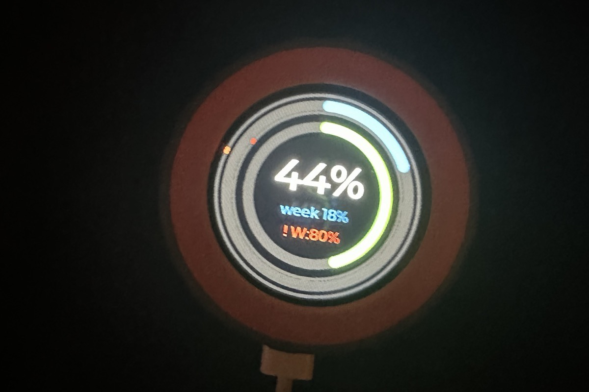
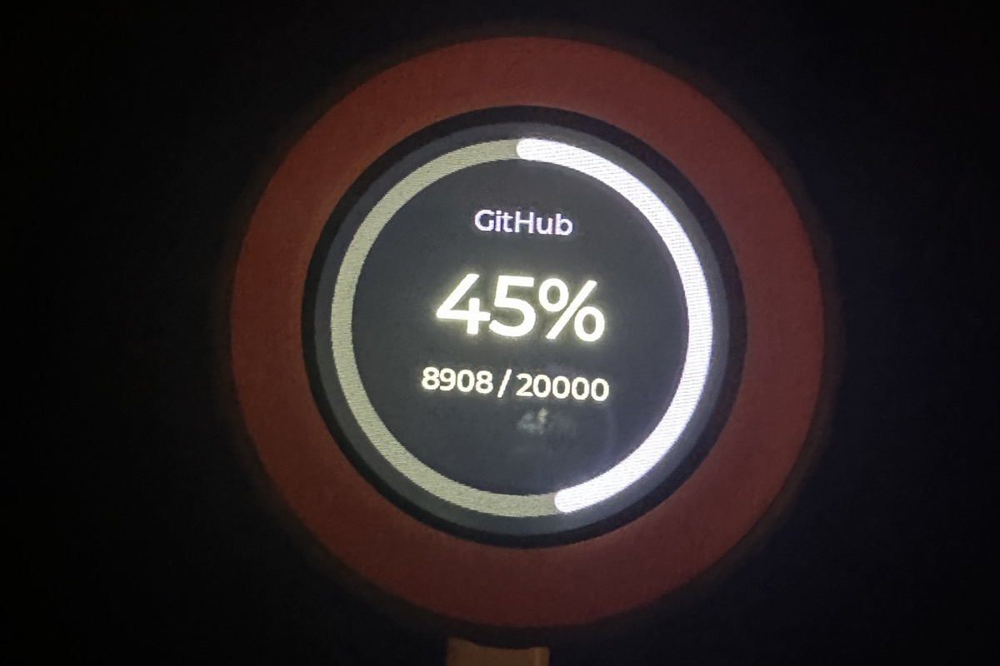
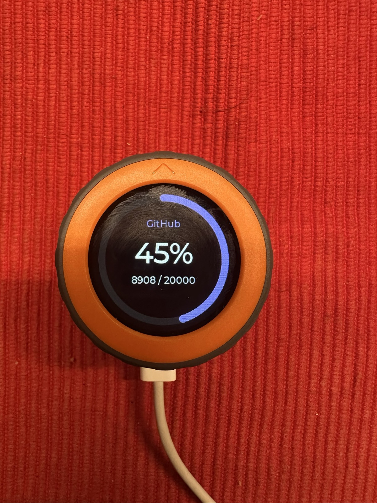

Claude Makes Things
The Maker saga: 1. Claude Makes Things · 2. Claudial of Service
Half an hour after I opened the box, a gadget I wasn't sure I could even get running was showing me how much of my AI allowance I had left this week. And I added a second screen of my own too.
A screen and a knob
It started with my tomatoes. In the Tomato Maxing series I broke into the pump that waters my balcony, and underneath its brand sticker it turned out to run on Tuya, the company behind thousands of cheap smart gadgets. I was wondering if Tuya had something to offer with buttons and knobs.
So I put the question to my research automation, an agent that finds answers using my notes. The answer: dead end. The alternatives ran up to a couple of hundred euros, and one stood out as the cheapest and the most capable: the M5Dial, a cookie-sized round touchscreen inside a turning knob. It would do anything I could put on it.
That same evening I searched for "m5stack dial claude tokens" and found Claudial, Claude plus dial, an open-source project by a developer who goes by Moge800. They had shown it off on Reddit a few months earlier, under the label "Built with Claude". It turns the dial into a meter for Claude usage. The dial had a job before I had even bought it.
Then I let it sit.
Eventually I just bought one. It was a cat in a bag, as we say in German: I didn't know if I'd get it running, or whether I'd need extra hardware, plugs or cables to make it work, or how long it would take to arrive. It cost less than €50. If it didn't work, that wasn't so bad. If it did, it would be so cool.
"Try to install it on my dial"
The cat turned out to have everything out of the box: Wi-Fi, Bluetooth, a USB-C port. No extra anything. Claudial has two halves: firmware, the program that lives on the dial itself, and a small helper on the Mac that fetches the numbers and sends them to the dial over Bluetooth. I plugged the dial in and typed one line into Claude Code:
Clone git@github.com:Moge800/Claudial.git and try to install it on my dial
The first attempt to write the firmware died partway through. The dial dropped off the computer. For a minute I thought I'd bricked it and now owned a very round paperweight.
Have you tried turning it off and on again? Then again, at half the speed. It went through.
"Before you patch anything. Stop."
I hadn't thought much about how Claudial actually worked. I only noticed when the agent started poking around my Mac, looking for Claude's login. The helper couldn't log in. Claudial reads Claude's login from a file on disk, but on a Mac, Claude Code keeps its live login in the Keychain, the Mac's built-in password safe. The file on my machine had expired months ago.
The agent found it and started writing a patch to read the Keychain instead. I watched it work and stopped it:
Before you patch anything.
Stop.
Watching it poke around had reminded me: I had solved this kind of problem before. My Claude subscription comes with a meter that runs down and refills, and I had written a small tool to read it: type usage-check into a terminal, get the numbers. It had been rewritten several times over these very problems. It already knew how to read the Keychain, remembered its answers, and had a way around it when the official route was blocked. I told the agent where it lived.
It threw its work away and replaced Claudial's whole login-and-fetch mechanism with a single call to my tool. The code got shorter, and a hidden cost went with it. To read the meter, Claudial had been sending Claude a tiny paid request over and over and reading the numbers off the reply.
So the fix even saves money.
I took a photo.

"But don't stop here"
Claude isn't the only AI I have. I also use GitHub Copilot, and my tool reads that meter too:
But don't stop here since I have the github usage too. Can we make it that the button toggles between github and claude?
The dial has a button on its side that Claudial never used. The first install had used a pre-made firmware file from the author's project page. A second screen meant building the firmware from its source code, and that meant downloading the whole toolkit to build it with first. The agent did that, added the screen, and wrote the result onto the dial. At the slow speed this time.
Then the next photo:
It's so awesome. It worked.

Press the button and the dial flips to GitHub. Press again and it's back to Claude's two rings, the current session on the inside, the week on the outside. Turn the knob and it moves the point where the dial starts beeping at me.
Figuring out the buttons took me longer than building the whole thing. There's a button on top, one at the bottom, the touchscreen is a button too, and holding it for a second flips the whole screen upside down. I had wanted a gadget with buttons. I got one.
"It's better in real life"
The agent noticed that the ring came out almost white in my photo and offered to pick a stronger colour.
No, it's just a photo. It's better in real life.

The next day I took it to the office to show my colleagues. It worked fine there too. What I didn't know was that a second copy of the helper, started on the first evening, had lost the dial that same night. It was still looking.